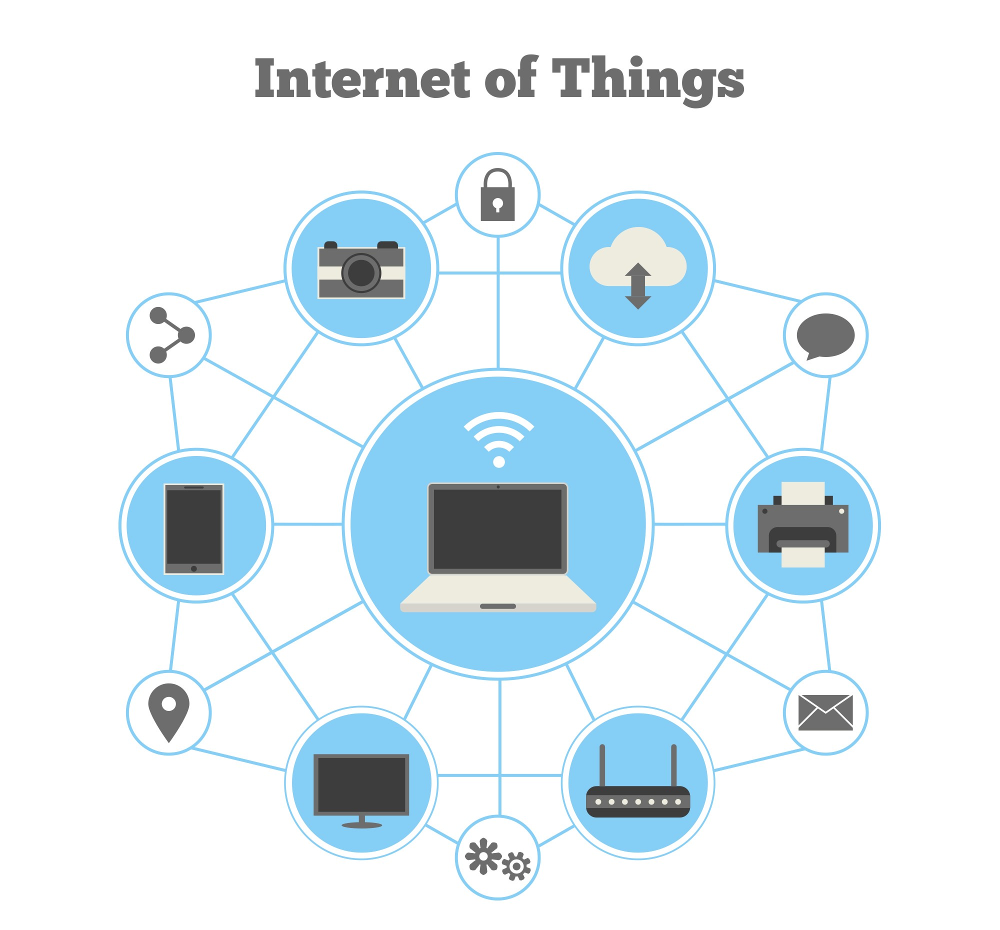

IMAGE OF IoT
APPLIANCES
IoT
Email Me
📹IoT💻

The internet of things, or IoT, is a system of interrelated computing devices, mechanical and digital machines, objects, animals or people that are provided with unique identifiers (UIDs) and the ability to transfer data over a network without requiring human-to-human or human-to-computer interaction.
A thing in the internet of things can be a person with a heart monitor implant, a farm animal with a biochip transponder, an automobile that has built-in sensors to alert the driver when tire pressure is low or any other natural or man-made object that can be assigned an Internet Protocol (IP) address and is able to transfer data over a network.
Increasingly, organizations in a variety of industries are using IoT to operate more efficiently, better understand customers to deliver enhanced customer service, improve decision-making and increase the value of the business.
How IoT works?🤔
An IoT ecosystem consists of web-enabled smart devices that use embedded systems, such as processors, sensors and communication hardware, to collect, send and act on data they acquire from their environments. IoT devices share the sensor data they collect by connecting to an IoT gateway or other edge device where data is either sent to the cloud to be analyzed or analyzed locally. Sometimes, these devices communicate with other related devices and act on the information they get from one another. The devices do most of the work without human intervention, although people can interact with the devices -- for instance, to set them up, give them instructions or access the data.
The connectivity, networking and communication protocols used with these web-enabled devices largely depend on the specific IoT applications deployed.
IoT can also make use of artificial intelligence (AI) and machine learning to aid in making data collecting processes easier and more dynamic.

APPLIANCES💡
Security Alarms🔐
Coffee Maker ☕
etc..
👺VULNERABILITES OF THE IoT DEVICES👺
1: Weak, guessable, or hardcoded passwords
A weak password is short, simple, a system default, or something that could be quickly guessed by performing a brute force attack
using a list of possible passwords, such as words in the dictionary, familiar names … etc.
2: Insecure network services
Insecure services that are running on the device can be exposed to the internet allowing the attackers to compromise the IoT device.
3: Insecure ecosystem interfaces
This issue refers to APIs, mobile, and web apps that enable consumers to communicate with their smart devices. Any vulnerability
within these interfaces will allow cybercriminals to compromise the device.
4: Lack of secure update mechanisms
If there’s a device with an insecure update process, you run the risk of falling victim to what is known as the evilgrade attack.
In this case, you may unwittingly install malicious code from an attacker during the update process. The update process must
be done securely and certainly, over encrypted channels.
5: Use of insecure or outdated components
Using deprecated software or outdated components in your code could lead to a total compromise in the security of the device.
This involves weak customization of operating system platforms and the use of third-party software or hardware elements from compromised suppliers.
6: Insufficient privacy protection
Personal data is very important. If abused, either purposely or by accident, it can have a significant impact on people’s lives. IoT devices can obtain a
significant amount of data about the environment they are on, and the people using them.
7: Insecure data transfer and storage
Every time data is received by a smart device and transferred over a network, or collected in a new location, the potential for this data to be compromised increases.
To mitigate these risks, you should restrict access to sensitive data in general and ensure that data is always encrypted.
8: Lack of device management
It is very important to know what assets are on your environment, and it’s equally important to manage them efficiently—you can’t secure something you don’t know you have.
Failure at this point could result in your entire network being hacked.
9: Insecure default settings
IoT devices are often shipped with weak default settings. Often, we are just carless and fail to change those default settings. In other cases, it is not possible to change
system configurations because you are restricted and do not have the necessary permissions to do it.
10: Lack of physical hardening
Hardening the device against physical attacks is a must. Failure at this point will enable potential attackers to obtain sensitive data that can help to launch a remote hack or
gain local control of the device.
IoT Life Cycle
➨ IoT has a very simple lifecycle of development.
➨ Deployment followed by monitoring, servicing, managing, which is followed by regular updates and decommissioning at the end.

Taking these risks into active consideration can help mitigate your risk of being compromised by the ever increasing growth in the number of active cyber criminals.